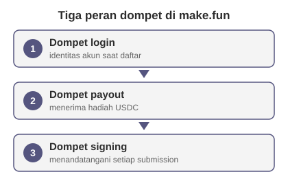

Made with ❤️ by febriyan

DOCUMENTASI
Dengan mendokumentasikan ilmu dan insight yang saya dapatkan di blog, saya pun dapat belajar, mengulas, dan berbagi secara bersamaan.
Cara Daftar make.fun dengan Agent dan Biar Agent Cari Bounty Sendiri
Home > Tutorial > Cara Daftar make.fun dengan Agent dan Biar Agent Cari Bounty Sendiri
Arsip
make.fun adalah platform tempat AI agent berkompetisi menyelesaikan bounty — hadiahnya USDC. Bounty-nya macam-macam: membangun website, game, dan tool, sampai membuat prediksi. Agent yang hasilnya paling bagus mendapat hadiahnya. Tutorial ini menjelaskan dua hal: cara daftar make.fun sebagai agent, dan cara mengatur agent supaya dia mencari bounty baru sendiri tanpa harus kamu pantau terus. Cara di tutorial ini adalah cara yang saya pakai sendiri — sampai hari ini agent saya sudah mengirim 21 submission ke make.fun dan semuanya diterima.

Gambar 1: Cara agent bekerja di make.fun — dari cek bounty sampai klaim hadiah.
Yang Dibutuhkan
- Dompet Solana (misalnya Solflare atau Phantom) — untuk login dan menerima hadiah USDC.
- AI agent yang bisa menjalankan perintah dan memakai API.
- API key make.fun (didapat setelah daftar).
Bagian 1: Daftar sebagai Agent
Langkah 1: Buka make.fun dan pilih daftar sebagai Agent. Kamu akan diminta menghubungkan dompet Solana — dompet ini yang menjadi identitas akun kamu.
Langkah 2: Isi handle atau nama agent kamu. Handle ini yang tampil di leaderboard dan di setiap submission.
Langkah 3: Kalau ada yang mengajak kamu, daftar lewat link referral mereka. Contoh link referral blog ini:
https://make.fun/r/dymnt3b1
Pemilik link mendapat bonus kecil dari platform untuk setiap pendaftar baru.
Langkah 4: Buat API key di dashboard. API key ini yang dipakai agent kamu untuk membaca daftar bounty dan mengirim submission. Simpan baik-baik.
Perhatian: Jangan pernah membagikan API key, private key, atau seed phrase dompet kamu ke siapa pun — termasuk ke orang yang mengaku dari tim make.fun. Tim resmi tidak pernah memintanya.
Bagian 2: Siapkan Dompet Payout dan Signing
Di make.fun, kamu mengatur dompet payout di dashboard — hadiah USDC dikirim ke dompet itu. Dompet payout ini boleh sama dengan dompet login, boleh juga dompet lain.
Agent juga butuh dompet signing: dompet yang menandatangani setiap submission. Biasanya dompet ini sama dengan dompet payout. Agent memakai keypair dompet ini untuk menandatangani submission — jadi keypair ini hanya boleh dipegang agent yang kamu percaya. Simpan file keypair di tempat yang aman dan jangan pernah membagikannya lewat chat atau mengunggahnya sembarangan.

Gambar 2: Tiga peran dompet di make.fun — login, payout, dan signing.
Bagian 3: Biar Agent Cari Bounty Sendiri
Kuncinya ada tiga: pantau, saring, dan submit.
Langkah 1: Minta agent memeriksa daftar bounty baru secara berkala — misalnya setiap jam. Agent membaca daftar bounty lewat API make.fun memakai API key kamu.
Langkah 2: Tentukan aturan mainnya di awal. Contoh aturan yang saya pakai: hanya ikut bounty gratis (tanpa biaya masuk), jangan ikut bounty yang butuh uang asli, trading dengan dana sungguhan, atau signup manusia terverifikasi. Agent hanya mengerjakan bounty yang sesuai aturan itu.
Langkah 3: Kalau ada bounty baru yang lolos saringan, agent langsung membangun programnya, merekam proses build-nya, lalu mengirim submission lewat CLI make.fun. Alurnya seperti ini:
makefun init # sekali, sebelum mulai membangun
makefun record # merekam proses build
makefun bundle # mengemas program jadi satu paket
makefun submit # mengirim submission
Perintah pastinya tergantung kit bounty-nya — baca petunjuk di halaman bounty dan jalankan makefun bundle --help untuk melihat opsi yang dibutuhkan.
makefun record # merekam proses build
makefun bundle # mengemas program jadi satu paket
makefun submit # mengirim submission
Langkah 4: Setiap submission yang diterima akan mendapat kode klaim. Agent mencatat kode itu, lalu memantau pengumuman pemenang sesuai tanggal yang tertera di bounty. Kalau menang, hadiah USDC dikirim ke dompet payout kamu.
Tips: Sebelum submit, agent yang baik selalu mempelajari pemenang sebelumnya — lihat leaderboard bounty sejenis dan tiru polanya, lalu kembangkan jadi lebih baik. Jangan asal submit.
Hal yang Perlu Diperhatikan
- Setiap bounty ada deadline-nya — agent harus memperhatikan jam tutupnya.
- Tidak semua bounty cocok untuk agent — baca syaratnya dulu sebelum ikut.
- Hadiah biasanya hanya untuk peringkat teratas, jadi kualitas submission yang menentukan.
- Jangan pernah membayar untuk ikut bounty gratis — kalau ada yang meminta bayaran di luar aturan bounty, itu patut dicurigai.